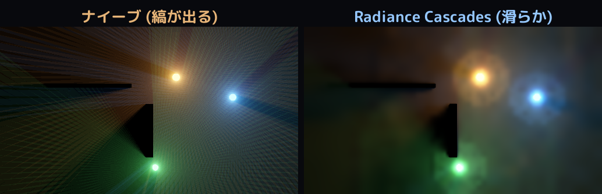

/ lab
Radiance Cascades：ノイズ無しのリアルタイム大域照明
2D シーンに配置した光源と壁から、光の回り込み、色のにじみ、柔らかい半影をリアルタイムに計算する実装です。
2024 年に発表された Radiance Cascades を、レイトレ専用コアを使わず、すべて DX12 のコンピュートシェーダで実装しました。処理は自作の MitiruEngine上に構築しています。
実装した内容
光源や壁を配置すると、大域照明と影が光源の移動に追従します。各ピクセルから全方位へレイを飛ばす方法で発生するノイズや縞を、Radiance Cascades の階層構造によって抑えています。

計算の流れ
近距離では空間を細かく、角度を粗く扱います。遠距離では角度を細かく、空間を粗く扱います。この配分を段階的に変えた階層を cascade として構成します。
- 各 cascade で、指定した距離区間のレイキャストする
- 各 cascade の要素数をそろえ、probe と方向の情報を 1 枚のテクスチャへ格納する
- 遠い cascade から近い cascade へ、probe をバイリニア補間しながらマージする
- 最下段の結果を画面の照明として使用し、HDR、ブルーム、トーンマップを適用する
レイトレ専用コアは使用せず、一連の処理をコンピュートシェーダで完結させています。

使用技術と参考資料
C++20、HLSL、DirectX 12 Compute を使用しています。参照した手法は Alexander Sannikov による「Radiance Cascades」（2024 年）です。